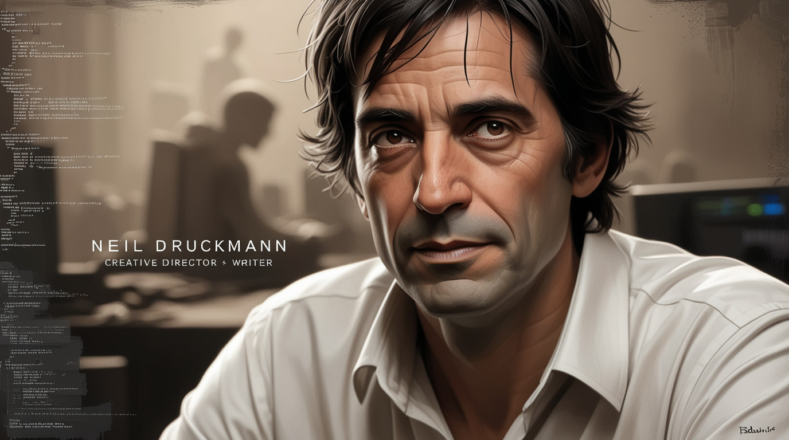

Biografia do Autor
The Last of Us é uma franquia de jogos eletrônicos criada pelo estúdio Naughty Dog e publicada pela Sony Computer Entertainment. O primeiro jogo foi lançado em 14 de junho de 2013 para PlayStation 3, posteriormente remasterizado para PlayStation 4 e refeito como The Last of Us Part I para PlayStation 5.
A história se passa em um mundo pós-apocalíptico, devastado por uma pandemia causada pelo fungo Cordyceps, que transforma humanos em criaturas violentas conhecidas como infectados. O primeiro jogo acompanha Joel, um homem marcado por uma tragédia pessoal, e Ellie, uma adolescente imune ao fungo. Juntos, eles cruzam os Estados Unidos em busca dos Vagalumes, grupo que acredita poder criar uma cura. A trama aborda laços emocionais, sobrevivência, moralidade e escolhas difíceis.
Em The Last of Us Part II (2020), a narrativa foca em Ellie, agora adulta, e explora temas mais profundos como vingança, ciclos de violência e consequências das escolhas do primeiro jogo. Além dos jogos, o universo se expandiu com HQs (American Dreams), livros de arte e, em 2023, a série de TV The Last of Us pela HBO, estrelada por Pedro Pascal (Joel) e Bella Ramsey (Ellie), aclamada pela crítica e pelo público.

The Last of Us é considerado um dos maiores jogos de todos os tempos, ganhando inúmeros prêmios, incluindo Jogo do Ano no The Game Awards 2013 e 2020. É elogiado por sua narrativa emocional e madura, personagens profundos, trilha sonora marcante (composta por Gustavo Santaolalla) e inovação na forma de contar histórias interativas.
A franquia influenciou o design narrativo em jogos e consolidou a Naughty Dog como uma referência em storytelling. Com a série da HBO, o universo alcançou ainda mais público, recebendo prêmios como Melhor Série de Drama em várias premiações. Até hoje, The Last of Us é estudado em cursos de game design, roteiro e narrativa interativa, sendo um marco na história dos videogames.